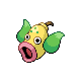
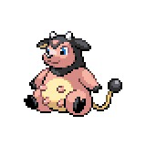
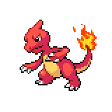
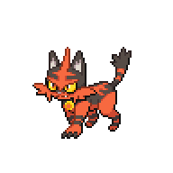

After Sensei Keta
Post-Badge Two Activities

Now that you've gotten your second badge, there's a few extra things we can do. First, head back to East Gearen City via the train. The Pokeball Emporium has been updated with a Net Ball, which is quite expensive but if you need it for Water-type or Bug-type Pokemon it could come in handy. In Gearen Park, you can also now find a Budew
 roaming around. It will battle you if you give it a Gourmet Treat. The last thing we can do here is in Gearen Laboratory. We can continue our Johto region sidequest, so talk to the ranger on the left side
roaming around. It will battle you if you give it a Gourmet Treat. The last thing we can do here is in Gearen Laboratory. We can continue our Johto region sidequest, so talk to the ranger on the left side again and fight Bugsy. Once you defeat him, the ranger will let you know that you have beaten all the gym leaders she had prepared. With that, our Johto quest will continue elsewhere. Before we move on, I would recommend getting the Golden Axe from the AP Shop if you have enough AP for it.
again and fight Bugsy. Once you defeat him, the ranger will let you know that you have beaten all the gym leaders she had prepared. With that, our Johto quest will continue elsewhere. Before we move on, I would recommend getting the Golden Axe from the AP Shop if you have enough AP for it.
Head back to Sheridan Village and heal up. We can start heading to Route 3, but once we are inside the Route 3 connecting building we'll once again meet Amanda. She'll congratulate you on your second badge, and promptly challenge you to a battle.

League Scout Amanda
|
Bronzor, Level 24 - Heat Rock |
Steel | Psywave |
|---|---|---|
| Gyro Ball | ||
| Psychic | Confuse Ray | |
| Sunny Day | ||
|

Weepinbell, Level 25 - Miracle Seed |
Grass | Razor Leaf |
| Knock Off | ||
| Poison | Hidden Power Fire | |
| Sleep Powder | ||
|

Miltank, Level 24 |
Normal | Stomp |
| Stacking Shot | ||
| Thunder Wave | ||
| Milk Drink | ||
|

Charmeleon, Level 25 - Charcoal |
Fire | Flame Burst |
| Air Cutter | ||
| Dragon Rage | ||
| Sunny Day | ||
|

Torracat, Level 26 - Muscle Band |
Fire | Flamethrower |
| Double Kick | ||
| Bite | ||
| Swagger | ||
Reward:  364 364
|
||
Amanda has significantly upgraded her team from just a Litten. Her strategy revolves mainly around being able to set up Sunny Day with Bronzor and then letting Weepinbell, Charmeleon, and Torracat run wild. If she gets her Sun set up, Weepinbell will be very fast, though thankfully its moves are relatively weak and the Sun will boost your Fire-type moves against it. Charmeleon can hit incredibly hard, and be careful of Dragon Rage which does flat 40 HP, and Torracat with Flamethrower can hurt a lot, but its other moves aren't too strong. Both Charmeleon and Torracat are pretty frail, so you can knock them out as long as you can take a hit.
Miltank is her final threat. With Thunder Wave and Stomp, along with natural bulk and Milk Drink, this thing can be a pain to take down while still having enough Pokemon to face her other threats. If you manage to inflict Poison or Burn, stalling it is a potential option though it will require some Super Potions. Another option is to Paralyze it and turn the tables against it. With it being slower, you don't have to fear flinches from Stomp, and can whittle it down. Overall, Amanda this time around is tough, but with a solid strategy and the right Pokemon is beatable. Rock-types such as Lycanroc or Graveler can do well here too as long as Weepinbell is gone.
Once you defeat her, she'll give you HM01 Cut. If you have a Golden Axe, you don't have to worry about teaching it to any Pokemon. We'll go ahead and explore some areas now available to us with this move. First, on the left side of the Sheridan Village Shop, you can cut down the tree and grab TM59 - False Swipe,
 which is nice for catching any Pokemon you might need. Then we'll head over to Route 2. Right before the entrance to Amethyst Cave, you can cut the tree to the right and grab yourself the Magical Seed.
which is nice for catching any Pokemon you might need. Then we'll head over to Route 2. Right before the entrance to Amethyst Cave, you can cut the tree to the right and grab yourself the Magical Seed. These Seed items can be used to different effects in their respective fields.
These Seed items can be used to different effects in their respective fields.
Our final stop is in Amethyst Cave. Once you cross the first bridge, head over to the left side of the first room of the Cave. You'll need to Rock Smash and then exit to a meadow,
 where you can then cut a tree. This is Pom-Pom meadow, and you can find different encounters here. You can also grab an infinite amount of Yellow Nectar,
where you can then cut a tree. This is Pom-Pom meadow, and you can find different encounters here. You can also grab an infinite amount of Yellow Nectar, which you can use to change the form of Oricario. We can only catch the Pom-Pom form right now anyways, but we'll have the opportunity to change its form soon.
which you can use to change the form of Oricario. We can only catch the Pom-Pom form right now anyways, but we'll have the opportunity to change its form soon.
That's everything we can do for now, so head back over to where you fought Amanda. You can also come back here to heal any time while exploring the next area: Route 3.